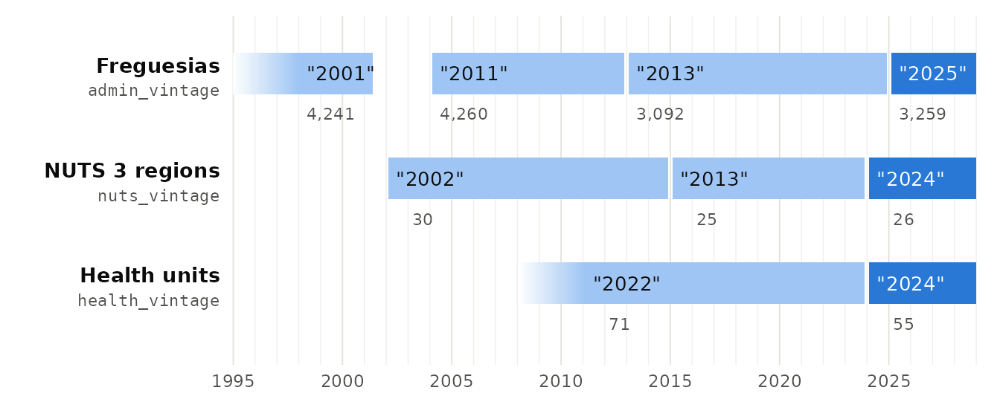

Portugal’s boundaries are redrawn from time to time. Data collected before a change uses the old units, so comparing it with newer data, or putting it on today’s map, requires knowing how the old units relate to the new ones. geopt calls each version of a set of boundaries a vintage.
Three things change, on separate schedules, so geopt tracks each separately:
| What changes | Argument | Vintages |
|---|---|---|
| Freguesias | admin_vintage |
"2001", "2011", "2013",
"2025" (current) |
| NUTS regions | nuts_vintage |
"2002", "2013", "2024"
(current) |
| Health regions | health_vintage |
"2022", "2024" (current) |
Vintages are always named by their year. If you leave the vintage
argument out, the current vintage is returned by default (which may
change when geopt adds a newer map). To keep a script’s meaning fixed,
name the year: "2025" will always mean the 2025 map.
Municipalities haven’t changed since 1998, so a municipality code means the same thing in every vintage.
The chart shows when each vintage was in force. Each bar is labelled with the value to pass, and the number under it is how many units that vintage has (for NUTS, the number of NUTS 3 regions):

The darker bars are the current vintages. A vintage’s name isn’t always the year it came into force: the 2013 NUTS revision, for example, has been in use since 2015. Two bars fade in, because those maps have no single start date: geopt has the freguesias as the 2001 census recorded them, and the health units as they stood just before the 2024 reform. The gap between the first two freguesia maps is when new freguesias were being created one at a time (see below).
This guide covers freguesias and NUTS regions. Health regions have
their own guide, vignette("health-geographies").
How the freguesias changed
geopt has four freguesia maps:
admin_vintage |
In force | Freguesias | Used by | Law |
|---|---|---|---|---|
"2001" |
until 2001 | 4,241 | the 2001 census | no single law (see below) |
"2011" |
2004 to 2013 | 4,260 | the 2011 census | no single law (see below) |
"2013" |
2013 to 2025 | 3,092 | the 2021 census | Lei 11-A/2013, and Lei 56/2012 for Lisboa |
"2025" |
since 2025 | 3,259 | today’s official boundaries (CAOP) | Lei 25-A/2025 |
In 2013, about half of all freguesias were merged into uniões de freguesias (unions of freguesias). In 2025, 302 freguesias that had been merged were restored.
Neither of the maps before 2013 was made by a single law: freguesias were created one law at a time. So those two maps are named after the census that recorded them, and the later two after their reform.
Between the two censuses, 22 freguesias were created and 3 dissolved,
by laws of 2001, 2002 and 2003. The 2011 map reached its final form on 1
January 2004, when the last three came into being: Corvite, Lixa do
Alvão and Nossa Senhora de Fátima (Leis 62/2003, 63/2003 and 68/2003).
geopt has the map from before these changes ("2001") and
from after them ("2011"), but not the ones in between.
The 1991 census used an earlier map again, with 4,208 freguesias in 305 municipalities: Odivelas, Trofa and Vizela were only created in 1998. geopt has no vintage for it.
pt_crosswalk() shows how the freguesias of two vintages
correspond:
x <- pt_crosswalk("2013", "2025")
table(x$relation)
#>
#> renumbered split unchanged
#> 1 301 2957relation |
Meaning |
|---|---|
unchanged |
same territory, code and name |
renamed |
same territory and code, new name |
renumbered |
same territory, new code |
merged |
several old freguesias became one (the 2013 uniões) |
split |
one old freguesia became several (the 2025 restorations) |
For example, the união of Águeda and Borralha became two freguesias again in 2025:
x[x$from == "010121", ]
#> from to name_from name_to relation
#> 11 010121 010130 União das freguesias de Águeda e Borralha Águeda split
#> 14 010121 010133 União das freguesias de Águeda e Borralha Borralha splitThe one renumbered freguesia is Colos, which kept its
territory in 2025 but got a new code.
A code only identifies a freguesia within its own
vintage. None of the freguesias restored in 2025 got its
pre-2013 code back. Don’t join data from one vintage onto codes from
another: go through pt_crosswalk() or
pt_recode().
Bringing older data onto today’s map
pt_recode() converts a data frame from one vintage to
another. What it should do with the values depends on the direction, and
on what kind of value they are:
| Counts (cases, population) | Rates, averages, medians | |
|---|---|---|
| Several old freguesias become one | add them up: aggregate = sum
|
can’t be combined: convert the counts, then recompute |
| One old freguesia becomes several | share them out: split = "weight"
|
copy to each: split = "replicate"
|
pt_recode() won’t guess. It stops if a merge happens
without aggregate, or a split without
split.
From the 2013 map: splits
Data from 2013 to 2025, such as the 2021 census, has one value per união. Some uniões are several freguesias now, and there’s no exact way to divide a value between them, so choose how:
old <- data.frame(dtmnfr = "010121", casos = 100)
# Copy the value to every restored freguesia (right for rates)
pt_recode(old, from = "2013", values = "casos", split = "replicate")
#> dtmnfr freguesia casos
#> 1 010130 Águeda 100
#> 2 010133 Borralha 100
# Share it out in proportion to area
pt_recode(old, from = "2013", values = "casos",
split = "weight", weights = "area")
#> dtmnfr freguesia casos
#> 1 010130 Águeda 75.84466
#> 2 010133 Borralha 24.15534Area is a rough guide, because people don’t spread out evenly. If a better weight is available, such as population, pass it as a named vector keyed by the current code:
From before 2013: mostly merges
Going from the pre-2013 map to today is mostly the opposite: several old freguesias now form one união, so their counts are added up. These three old freguesias of Anadia are one freguesia today:
old <- data.frame(dtmnfr = c("010301", "010302", "010314"),
pop = c(500, 800, 300))
pt_recode(old, from = "2011", values = "pop", aggregate = sum)
#> dtmnfr freguesia
#> 1 010316 União das freguesias de Amoreira da Gândara, Paredes do Bairro e Ancas
#> pop
#> 1 1600Not every old freguesia was merged. Many are unchanged, and those restored in 2025 match a current freguesia one to one:
x11 <- pt_crosswalk("2011", "2025")
table(x11$relation)
#>
#> merged renamed renumbered unchanged
#> 1753 20 310 2177If the data has only some members of a união, the total covers the ones present, and a warning says the group is incomplete.
When only names are available
People working with older files often have only freguesia names but
no codes. name_from holds the name each freguesia had at
the time, which is usually not today’s name:
x11[x11$to == "030364", c("from", "name_from", "name_to")]
#> from name_from
#> 442 030307 Braga (Cividade)
#> 443 030324 Braga (Maximinos)
#> 444 030352 Braga (Sé)
#> name_to
#> 442 União das freguesias de Braga (Maximinos, Sé e Cividade)
#> 443 União das freguesias de Braga (Maximinos, Sé e Cividade)
#> 444 União das freguesias de Braga (Maximinos, Sé e Cividade)pt_match() recognizes these older names, and returns the
freguesia that covers the same place today:
old <- data.frame(freg = c("Sé", "Maximinos", "Cividade", "Gualtar"),
mun = "Braga", pop = c(100, 200, 300, 400))
old$dtmnfr <- pt_match(old$freg, level = "freguesia", context = old$mun,
quiet = TRUE)
old
#> freg mun pop dtmnfr
#> 1 Sé Braga 100 030364
#> 2 Maximinos Braga 200 030364
#> 3 Cividade Braga 300 030364
#> 4 Gualtar Braga 400 030319The first three were merged in 2013, so they now share one code. Add them up before joining:
aggregate(pop ~ dtmnfr, old, sum)
#> dtmnfr pop
#> 1 030319 400
#> 2 030364 600To get the code each freguesia had before 2013 instead, pass
admin_vintage = "2011". Each old freguesia then keeps its
own code, and pt_recode() can convert the data from
there:
d <- data.frame(dtmnfr = pt_match(old$freg, level = "freguesia",
context = old$mun, admin_vintage = "2011",
quiet = TRUE),
pop = old$pop)
d
#> dtmnfr pop
#> 1 030352 100
#> 2 030324 200
#> 3 030307 300
#> 4 030319 400
pt_recode(d, from = "2011", values = "pop", aggregate = sum)
#> dtmnfr freguesia pop
#> 1 030364 União das freguesias de Braga (Maximinos, Sé e Cividade) 600
#> 2 030319 Gualtar 400With admin_vintage = "2011", a current name
only matches if that freguesia had a single predecessor. A união that
absorbed several returns NA, because nothing says which of
them was meant.
Data from the 2001 census
Most freguesias of the 2001 map are the same in 2011, with the same code. The exceptions are 17: 3 that were dissolved, and 14 that gave up part of their territory to a new freguesia but kept their code. In 2001, for example, Ponte (Guimarães) still included Corvite:
x01 <- pt_crosswalk("2001", "2011")
x01[x01$from == "030838", ]
#> from to name_from name_to relation
#> 611 030838 030838 Ponte Ponte split
#> 643 030838 030874 Ponte Corvite splitSo a value for Ponte in 2001 data covers two freguesias of the 2011
map. With from = "2001", pt_recode() treats it
as the split it is; read as 2011 data, all of it would silently go to
the smaller Ponte:
pt_recode(data.frame(dtmnfr = "030838", taxa = 4.2), from = "2001",
to = "2011", values = "taxa", split = "replicate")
#> dtmnfr freguesia taxa
#> 1 030838 Ponte 4.2
#> 2 030874 Corvite 4.2Names work the same way: with admin_vintage = "2001",
pt_match() returns the 2001 code, and it matches names that
were gone by 2011, such as Agualva-Cacém.
The 2001 census areas from get_censos() give two
freguesias a different code from INE’s own list, because both had moved
to another municipality: Vale de Amoreira (090756 instead
of 090804) and Moita (100117 instead of
101003). pt_recode() and
pt_match() accept both codes for "2001".
The other way: today’s data on the 2013 map
To compare current data with the 2021 census, convert it back to the 2013 map. The restored freguesias go back into their união, so this is a merge:
members <- x$to[x$from == "010121"]
df <- data.frame(dtmnfr = members, casos = c(30, 10))
pt_recode(df, from = "2025", to = "2013", values = "casos", aggregate = sum)
#> dtmnfr freguesia casos
#> 1 010121 União das freguesias de Águeda e Borralha 40Maps of another vintage
get_map() draws the 2025 map.
admin_vintage = "2013" draws the map in force from the 2013
reform until the 2025 restorations, from DGT’s official boundaries (CAOP
2024, the last release on that map). The first call downloads and
simplifies them, which takes a few minutes and needs the rmapshaper
package. After that the result is cached, so later calls take
seconds:
m2013 <- get_map("freguesia", admin_vintage = "2013")
sum(m2013$geopt_type == "boundary") # 3092 freguesiasData on the 2013 map then goes straight onto it, without converting. Names are matched against the 2013 freguesias, so that map’s uniões are found by name:
get_map("freguesia", admin_vintage = "2013", data = data_2021, by = "dtmnfr")Each 2013 freguesia has the last name it carried on that map, the one INE publishes. Names it had earlier match as well:
pt_match(c("Buarcos e São Julião", "Buarcos"), level = "freguesia",
context = "Figueira da Foz", admin_vintage = "2013", quiet = TRUE)
#> [1] "060520" "060520"
#> attr(,"report")
#> input matched_name code method dist
#> 1 Buarcos e São Julião Buarcos e São Julião 060520 exact NA
#> 2 Buarcos Buarcos 060520 exact NABoth are 060520: the freguesia was called Buarcos until
it was renamed in 2015.
nuts_vintage does the same for NUTS:
get_map("nuts3", nuts_vintage = "2013") draws the 25 NUTS 3
regions of the 2013 revision, from the bundled data, with nothing to
download. Any NUTS revision combines with either freguesia map, because
every revision groups whole municipalities. The health levels exist on
the 2025 map only.
get_map() doesn’t draw the maps from before 2013. For
boundaries of that era, download the census areas with
get_censos(). Their dtmnfr column holds the
code of that census’s map ("2011" for 2011,
"2001" for 2001), so they can be merged into
freguesias:
bgri <- get_censos(region = "ram", year = 2011,
variables = "N_INDIVIDUOS_RESIDENT")
freg_2011 <- aggregate(bgri["N_INDIVIDUOS_RESIDENT"],
by = list(dtmnfr = bgri$dtmnfr), FUN = sum)NUTS regions
The NUTS regions are groups of municipalities, and they’re revised every few years. geopt has three revisions:
nuts_vintage |
In use | NUTS 3 regions | Law |
|---|---|---|---|
"2002" |
2002 to 2015 | 30 | Decreto-Lei 244/2002 |
"2013" |
2015 to 2024 | 25 | Regulation (EU) 868/2014 |
"2024" |
since 2024 | 26 | Delegated Regulation (EU) 2023/674 |
Because they’re built from municipalities, pt_nuts_codes
lists each municipality’s region in every revision. Covilhã, for
example, moved to a new NUTS 3 region in 2013:
pt_nuts_codes[pt_nuts_codes$dtmn == "0503", c("nuts_vintage", "nuts3_cod", "nuts3")]
#> nuts_vintage nuts3_cod nuts3
#> 62 2002 PT16A Cova da Beira
#> 370 2013 PT16J Beiras e Serra da Estrela
#> 678 2024 PT196 Beiras e Serra da Estrelapt_lookup(nuts_vintage = ) gives the whole table for one
revision.
The NUTS revision is independent of the freguesia map. INE publishes
the same freguesias under more than one NUTS revision, so choose
nuts_vintage and admin_vintage separately.
Matching NUTS names: say which revision
pt_match() matches NUTS names against the current
revision unless told otherwise. Some older names cover territory that is
split between several regions today, so they aren’t matched. The 2002
region of Tâmega, for example, is spread across four of today’s NUTS 3
regions:
pt_match(c("Tâmega", "Alto Trás-os-Montes"), level = "nuts3", quiet = TRUE)
#> [1] NA NA
#> attr(,"report")
#> input matched_name code method dist
#> 1 Tâmega <NA> <NA> ambiguous NA
#> 2 Alto Trás-os-Montes <NA> <NA> ambiguous NA
pt_match(c("Tâmega", "Alto Trás-os-Montes"), level = "nuts3",
nuts_vintage = "2002", quiet = TRUE)
#> [1] "PT115" "PT118"
#> attr(,"report")
#> input matched_name code method dist
#> 1 Tâmega Tâmega PT115 exact NA
#> 2 Alto Trás-os-Montes Alto Trás-os-Montes PT118 exact NAThe riskier case is a name that both revisions use for different areas. It matches today’s region, with no sign that the area has changed:
pt_match("Ave", level = "nuts3", quiet = TRUE) # today's Ave
#> [1] "PT119"
#> attr(,"report")
#> input matched_name code method dist
#> 1 Ave Ave PT119 exact NA
pt_match("Ave", level = "nuts3", nuts_vintage = "2002", quiet = TRUE) # the 2002 Ave
#> [1] "PT113"
#> attr(,"report")
#> input matched_name code method dist
#> 1 Ave Ave PT113 exact NAFive NUTS 3 names are used by both the 2002 and current revisions for different groups of municipalities:
n <- pt_nuts_codes
members <- function(v, nm) sort(n$dtmn[n$nuts_vintage == v & n$nuts3 == nm])
shared <- intersect(n$nuts3[n$nuts_vintage == "2002"],
n$nuts3[n$nuts_vintage == "2024"])
moved <- Filter(function(nm) !identical(members("2002", nm), members("2024", nm)),
shared)
moved
#> [1] "Ave" "Douro" "Alentejo Central" "Alto Alentejo"
#> [5] "Médio Tejo"So when matching the regions in an INE series, check which NUTS
revision the series uses, and pass it as nuts_vintage. Of
the 28 NUTS 3 names INE publishes under “NUTS - 2002”, 22 match without
nuts_vintage, but only to today’s regions of the same name.
With it, all 28 match the right 2002 regions.